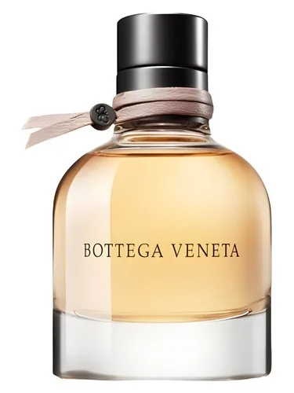

Bottega Veneta
- Para mujer
- Familia cuero y oud
- Lanzado en 2011
Con caja$1,850Te lo conseguimos en 2 días a 1 semanaSin caja$850Te lo conseguimos en 2 días a 1 semana
No disponible: te lo conseguimos en 2 días a 1 semana
Cómo huele
Cuero
Terroso
Musgoso
Pachulí
Amaderado
Sus notas
Salida
pimienta rosabergamota
Corazón
jazmín
Fondo
cueromusgo de roblepachulí
Bottega Veneta de Bottega Veneta es un perfume de cuero y oud para mujer, lanzado en 2011. Abre con pimienta rosa y bergamota, en el corazón tiene jazmín y deja un fondo de cuero y musgo de roble. Lo que más se siente: cuero, terroso y musgoso.